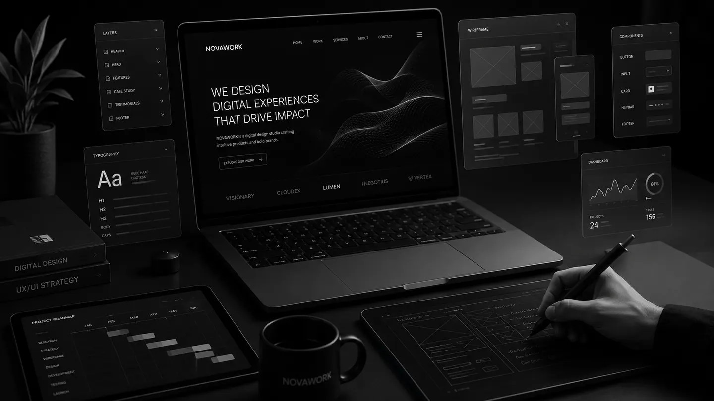
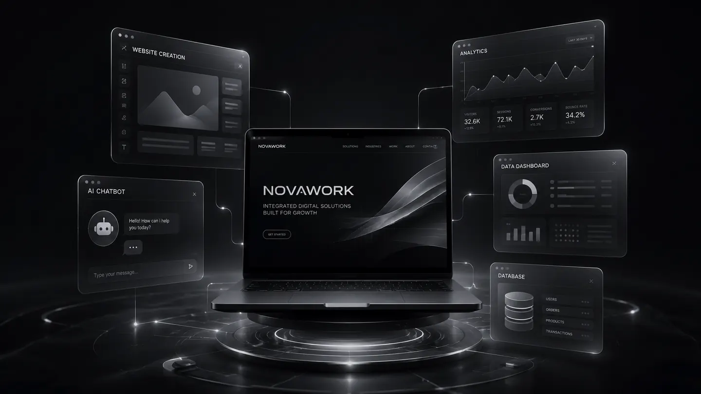

소개용 화면, 운영용 시스템, 측정·AI·데이터 작업을 먼저 분리합니다.
ABOUT NOVAWORK
작은 사업에 필요한 디지털 실행을 한 흐름으로 정리합니다.
NOVAWORK는 보여주는 홈페이지, 운영하는 웹시스템, 측정 환경, AI 상담 흐름, 공개 데이터 수집을 목적별로 나누어 직접 구현합니다. 처음부터 거창한 시스템을 만들기보다 지금 필요한 결과물을 명확히 정의하고, 실제로 쓸 수 있는 형태로 완성하는 데 집중합니다.
웹 제작웹시스템측정·AI·데이터

POSITIONING
화면만 만드는 곳이 아니라, 의뢰 내용을 구현 가능한 단위로 쪼개는 곳입니다.
NOVAWORK가 가장 먼저 확인하는 것은 “무엇을 만들 것인가”보다 “어떤 문제를 줄일 것인가”입니다. 공식 홈페이지가 필요한 상황인지, 신청 데이터를 저장해야 하는 상황인지, 기존 사이트를 고쳐야 하는 상황인지, 광고와 문의 성과를 측정해야 하는 상황인지 먼저 나눕니다.
이 구분이 명확해야 비용과 일정이 과하게 커지지 않습니다. 소개형 홈페이지에 DB와 관리자 기능을 억지로 넣지 않고, 운영형 웹시스템을 단순 랜딩페이지처럼 만들지 않습니다. 작업의 성격을 먼저 분리한 뒤 필요한 화면, 기능, 데이터, 검수 기준을 정리합니다.
페이지 수, 기능 수, 데이터 항목, 수정 기준을 작업 전 명확히 잡습니다.
납품 후 버튼, 데이터 저장, 이벤트, 응답 흐름이 실제로 쓰이는지 확인합니다.

SERVICE ROUTE
NOVAWORK가 작업을 나누는 방식
같은 “웹 작업”처럼 보여도 결과물의 목적은 다릅니다. 목적이 달라지면 필요한 구조와 검수 기준도 달라집니다.
보여주는 화면
사업 소개, 서비스 설명, 후기, FAQ, 전화·카카오톡·이메일 문의 연결이 핵심인 홈페이지와 랜딩페이지입니다.
홈페이지·랜딩페이지 보기운영하는 시스템
사용자 입력 데이터가 저장되고 관리자가 목록, 상태, 메모, 파일, 권한을 확인해야 하는 웹시스템입니다.
React·Firebase 웹시스템 보기운영 중인 사이트 개선
깨진 화면, 모바일 오류, 버튼 미작동, 문구·이미지 변경, GA4/GTM 이벤트 측정처럼 기존 사이트를 정리하는 작업입니다.
수정·추적 서비스 보기AI와 데이터 활용
반복 문의를 줄이는 GPT·AI 챗봇, 공개 웹페이지 데이터를 엑셀/CSV로 정리하는 크롤링 작업입니다.
AI·데이터 서비스 보기WORK METHOD
작업 전에는 범위를 좁히고, 작업 후에는 검수 기준을 남깁니다.
작은 프로젝트일수록 “어디까지 하는지”가 흐려지면 결과물이 흔들립니다. NOVAWORK는 상담 단계에서 필요한 결과물과 제외 범위를 먼저 정리하고, 납품 단계에서 확인 가능한 기준을 함께 전달합니다.
브랜드명, 서비스 설명, 기존 사이트 URL, 참고 화면, 계정 권한, 수집 대상 URL처럼 작업의 출발점이 되는 자료를 확인합니다.
페이지인지, 관리자 시스템인지, 이벤트 추적인지, AI 응답 흐름인지, 데이터 수집인지 분리해 견적 기준을 잡습니다.
PC·모바일 화면, 버튼 연결, 데이터 저장, 이벤트 발화, AI 답변 기준, 수집 결과 누락 여부를 확인합니다.
최종 파일, 배포 링크, 사용 방법, 수정 가능 영역, 계정·외부 서비스 주의사항을 정리해 전달합니다.
CAPABILITIES
현재 제공하는 핵심 서비스
현재 사이트는 아래 6개 서비스 기준으로만 구성했습니다.
01
홈페이지·랜딩페이지소개, 신뢰 요소, 문의 버튼, 반응형 화면, 기본 SEO/OG 세팅
02React·Firebase 웹시스템신청폼, DB 저장, 로그인, 관리자 목록, 상태 관리, 파일 업로드
03홈페이지 오류 수정화면 깨짐, 모바일 보정, 링크·버튼 수정, 간단한 인터랙션 추가
04GA4·GTM 추적 세팅전화, 카카오톡, 문의폼, CTA 버튼 클릭 이벤트 측정
05GPT·AI 챗봇FAQ 응답, 문서 기반 답변, 사람 연결 기준, 홈페이지 삽입형 상담 흐름
06웹 데이터 크롤링공개 데이터 수집, 중복 제거, 컬럼 정리, 엑셀/CSV 파일 제공

PROCESS
리서치 → 구조 → 구현 → 검수 → 전달
모든 서비스는 같은 순서로 진행하지 않습니다. 다만 공통적으로 현재 상황을 확인하고, 작업 범위를 좁히고, 구현 후 실제 동작 기준으로 검수합니다.
- 01현재 문제와 목표 확인
- 02필요한 화면·기능·데이터 분리
- 03구현 및 테스트 링크 공유
- 04수정 반영 후 최종 전달
GOOD FIT
이런 프로젝트에 잘 맞습니다
- 작은 사업의 대표 홈페이지나 랜딩페이지가 필요한 경우
- 신청·예약·고객 데이터를 직접 관리하고 싶은 경우
- 기존 사이트의 오류와 불편한 부분을 정리해야 하는 경우
- 광고 전 문의 버튼과 전환 행동을 측정하고 싶은 경우
- FAQ와 반복 문의를 AI 챗봇으로 줄이고 싶은 경우
- 공개 웹 데이터를 정해진 컬럼으로 정리해야 하는 경우
BOUNDARY
명확히 구분하는 범위
- 소개형 홈페이지와 DB·관리자 시스템은 별도 범위로 봅니다.
- 광고 운영 대행, 매출 상승 보장, 전문 원고 작성은 기본 범위가 아닙니다.
- AI 답변은 업무 보조 도구이며 중요한 안내는 사람 검수를 권장합니다.
- 로그인 우회, 개인정보 수집, 캡차 우회, 비공개 데이터 수집은 진행하지 않습니다.
- 대규모 엔터프라이즈 시스템이나 복잡한 ERP 구축은 별도 검토가 필요합니다.
STACK & OUTPUT
도구보다 결과물의 쓰임을 먼저 봅니다
필요하면 React와 Firebase를 쓰고, 필요 없으면 정적 홈페이지로 가볍게 만듭니다. 측정·AI·데이터 작업도 목적에 맞는 최소 구조부터 잡습니다.
WebHTML / CSS / JavaScript / React
반응형 화면, 문의 버튼, 페이지 구조, 기존 사이트 수정
SystemFirebase Auth / Firestore / Storage
데이터 저장, 로그인, 관리자 화면, 파일 업로드, 상태 관리
AnalyticsGA4 / GTM
페이지뷰, 클릭 이벤트, 문의폼 제출, 전화·카카오톡 추적
AI & DataGPT / Python
문서 기반 답변, 상담 흐름, 공개 데이터 수집, CSV/XLSX 정리
KAKAO CHANNEL
카카오톡 채널에서 NOVAWORK를 확인해 보세요
카톡 채널에서 NOVAWORK를 검색하거나 QR코드를 스캔하면 NOVAWORK 채널을 확인할 수 있습니다. 홈페이지 제작 상담, 자료 전달, 진행 관련 문의를 카톡으로도 편하게 남겨주세요.
카카오톡 실행
NOVAWORK 검색 또는 QR 스캔
채널 추가 후 문의
NEXT STEP
프로젝트 범위를 먼저 정리해 보십시오
제작 목적과 필요한 기능, 현재 상황을 남겨주시면 적합한 방향으로 정리해 안내드립니다.